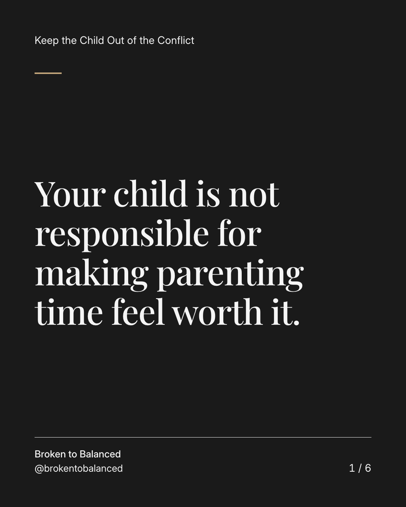
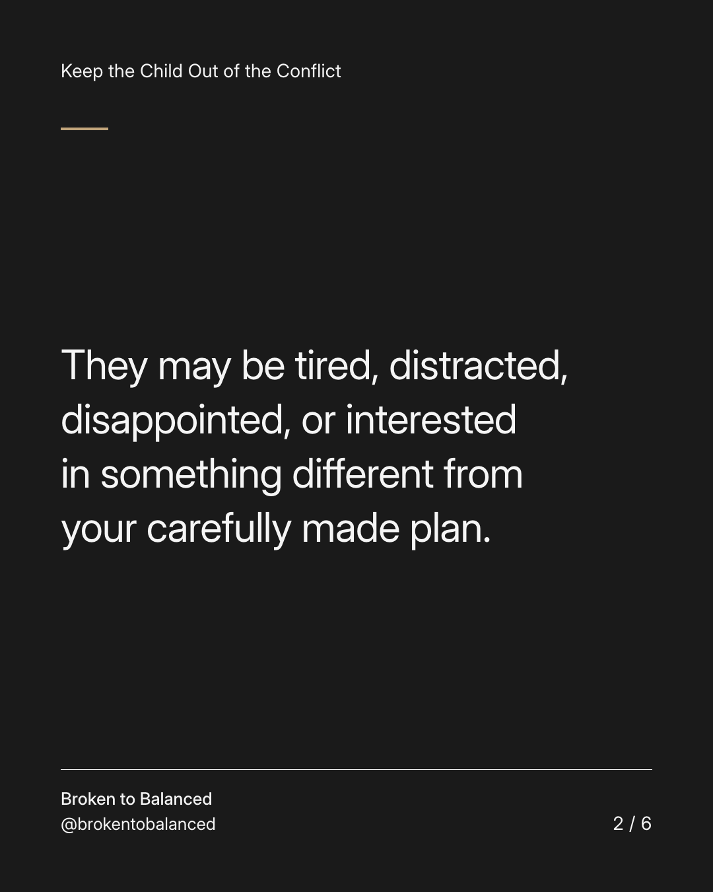
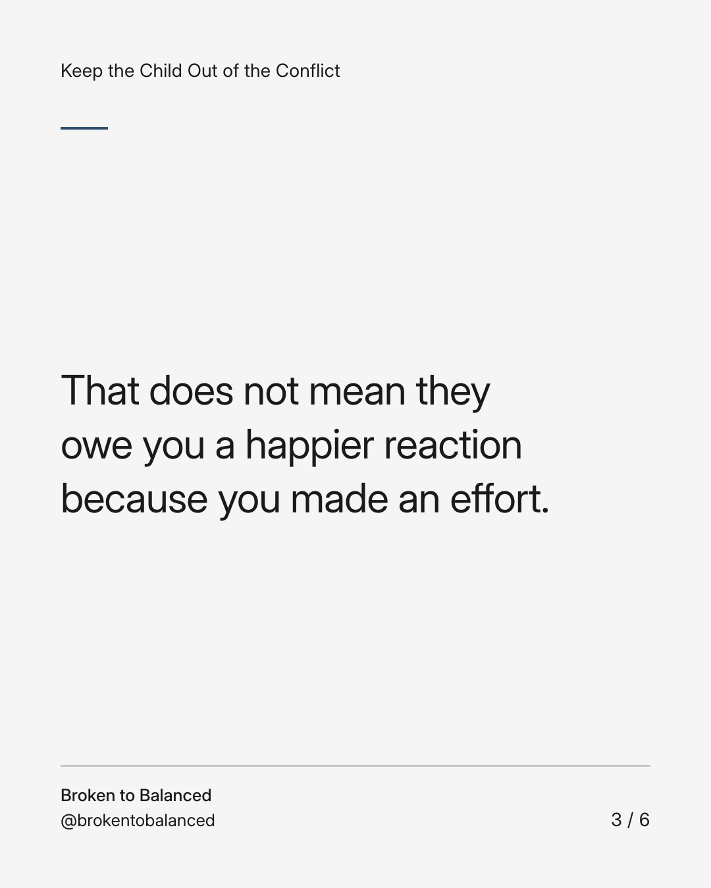
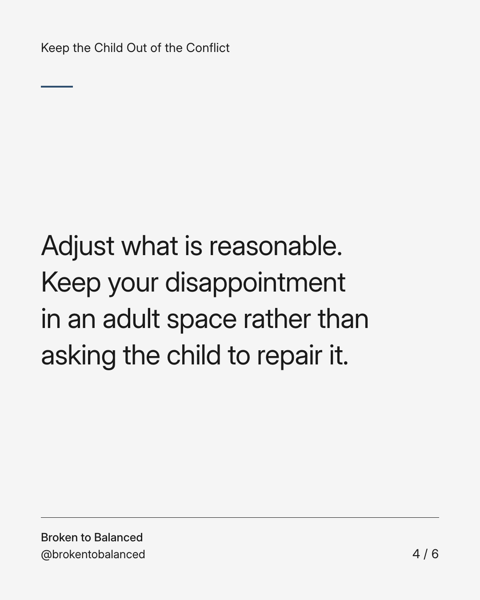
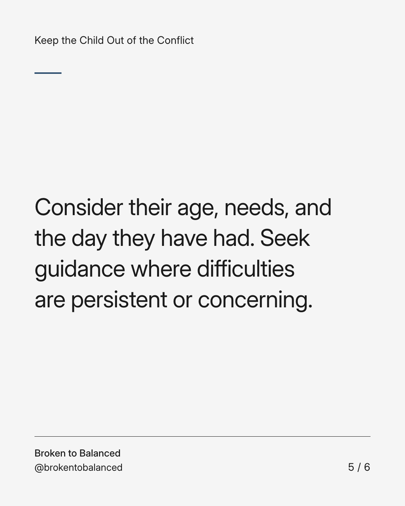
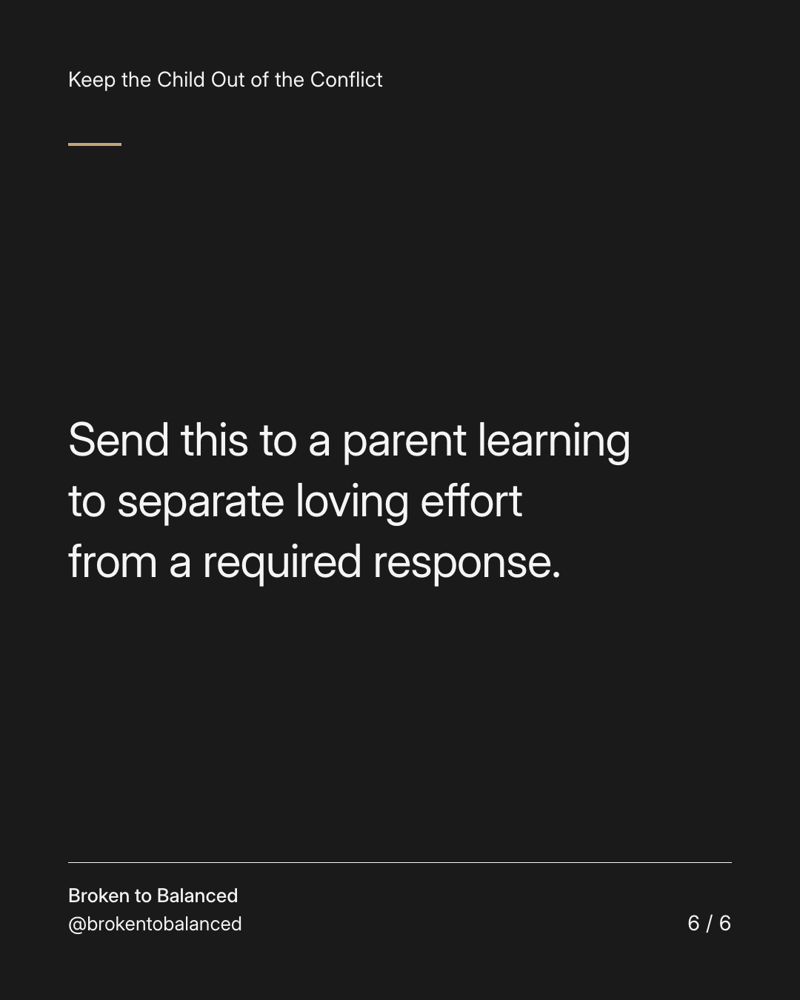

Exact text and accessibility text
Your child is not responsible for making parenting time feel worth it.
Slide 1 of 6. Your child is not responsible for making parenting time feel worth it.


Exact text and accessibility text
They may be tired, distracted, disappointed, or interested in something different from your carefully made plan.
Slide 2 of 6. They may be tired, distracted, disappointed, or interested in something different from your carefully made plan.


Exact text and accessibility text
That does not mean they owe you a happier reaction because you made an effort.
Slide 3 of 6. That does not mean they owe you a happier reaction because you made an effort.


Exact text and accessibility text
Adjust what is reasonable. Keep your disappointment in an adult space rather than asking the child to repair it.
Slide 4 of 6. Adjust what is reasonable. Keep your disappointment in an adult space rather than asking the child to repair it.


Exact text and accessibility text
Consider their age, needs, and the day they have had. Seek guidance where difficulties are persistent or concerning.
Slide 5 of 6. Consider their age, needs, and the day they have had. Seek guidance where difficulties are persistent or concerning.


Exact text and accessibility text
Send this to a parent learning to separate loving effort from a required response.
Slide 6 of 6. Send this to a parent learning to separate loving effort from a required response.
Exact caption
Plain-text fallback: select and copy the caption.